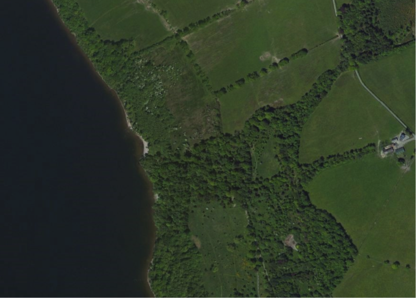

Plotting maps in R 20-07-19
Recently I have been working with maps - trying to understand where all my samples are coming from. To do this I wanted to plot my sampling locations on top of a map. After fiddling with a number of different ways to get maps in R, I have happily fallen upon the
A great package that can return a map in a variety of styles. Also, all the maps are open source and available to everyone for free!! Here is some code to get you started:
library(OpenStreetMap) # I had to run sudo R CMD javareconf to get rJava to load
# Note latitude and longitude of location
upperLeft <- c(56.022457,-4.5969357)
lowerRight <- c(56.014888,-4.5780147)
# Get a satellite image of area of interest
map <- openmap(upperLeft=upperLeft,
lowerRight=lowerRight,
type="bing")
# Plot the map
plot(map)
You'll get the following image - this is where Joanna and I got engaged! On the shores of Loch Lomond, just outside Glasgow.

Using the
Sometimes, if a particular area isn't available in a certain style, you'll get an error something like this:
You can try different options for the